Full Stack especializado en arquitectura de sistemas, automatización y soluciones escalables en PHP/MySQL.
Ecosistema administrativo para el control operativo, cálculo de devengados y gestión de capital humano.
Captura de producción diaria por empleado y generación de reportes maestros exportables a PDF/Excel.
Cálculo automatizado basado en asistencia y productividad. Historiales detallados por semana/mes.
Control de catálogo de actividades (Master Data) y administración de estatus de empleados.
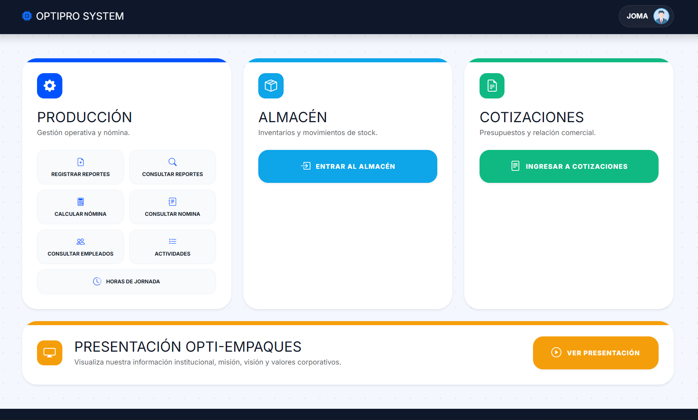
Dashboard Principal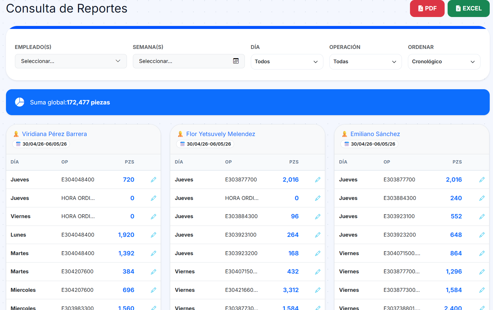
Consulta de Reportes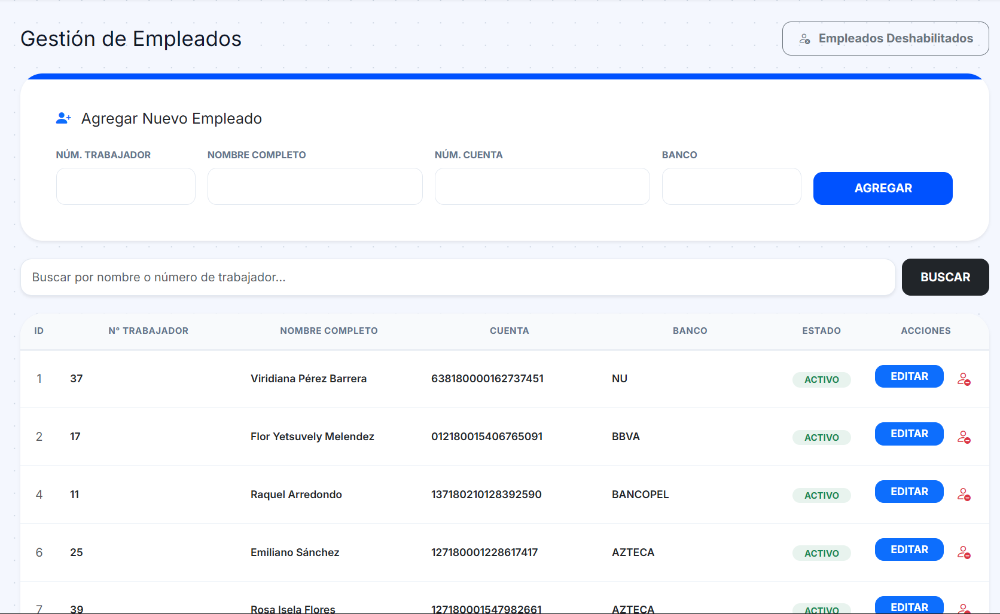
Consulta de personalSistema avanzado de gestión de almacenes con trazabilidad 360° de materiales y auditoría de inventarios.
Trazabilidad total por Código SAP/Material. Historial de arribos vs despachos con auditoría de Stock Real.
Módulos especializados para Rollos PET/PVC, Cartón, Etiquetas y Pallets con control de peso (Kg) y unidades.
Sistema de cierre mensual para congelar inventarios y generar resúmenes históricos de movimientos y stock final.
Administración técnica de SKUs: pesos, dimensiones y estandarización de piezas por pallet/caja.
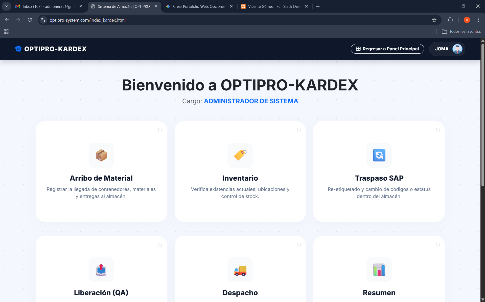
Menu Principal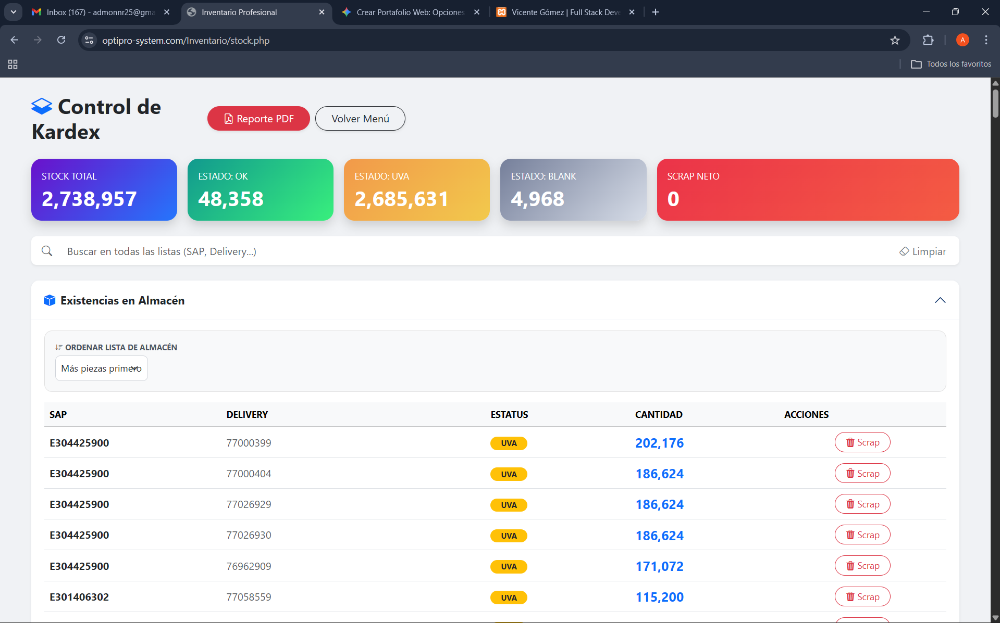
Inventario en Stock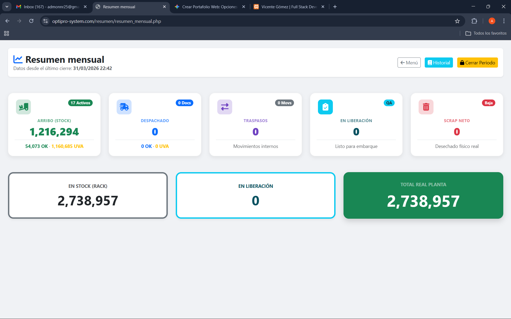
Resumen MensualAdministración de flujos comerciales, presupuestos dinámicos y relación con proveedores/clientes.
Generación masiva de Cotizaciones y Órdenes de Compra.
Sistema de firmas y estatus (Aprobada/Rechazada).
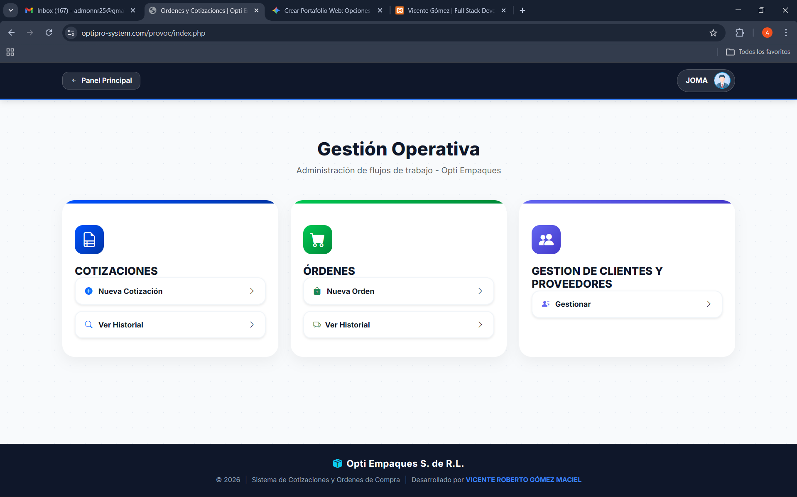
Menu Principal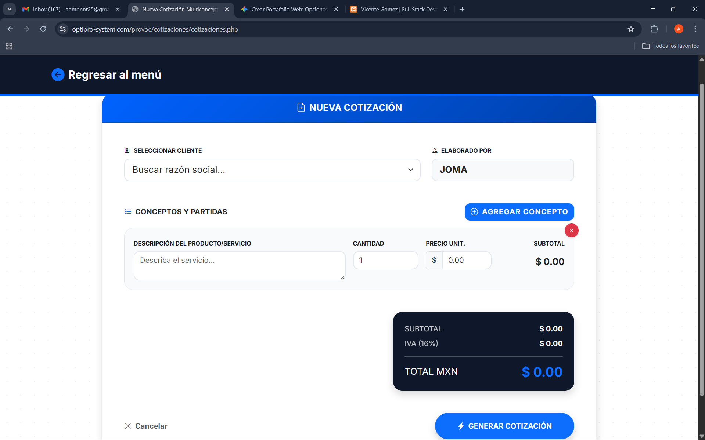
Nueva Cotizacion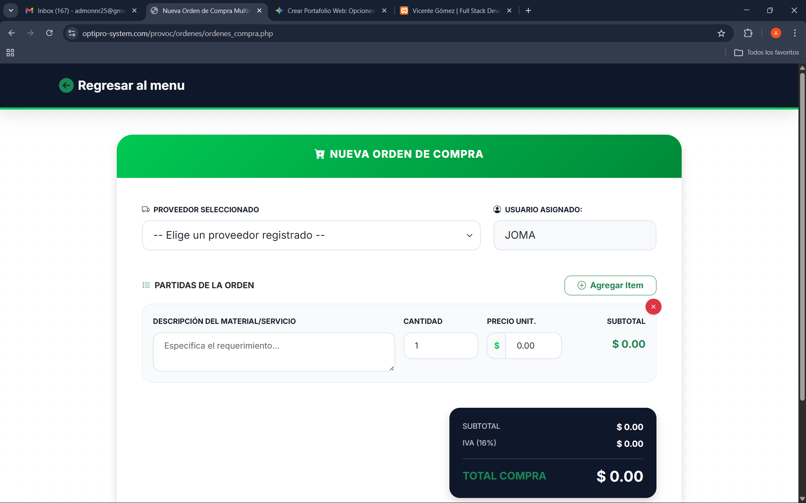
Nueva OrdenDiseño y desarrollo de la plataforma institucional para la comunicación de valores, servicios y contacto comercial.
Interfaz moderna y profesional enfocada en la conversión de clientes y presentación de soluciones de empaque (Blister Pack).
Secciones dedicadas a Misión, Visión, Valores y catálogo de servicios de alta precisión.
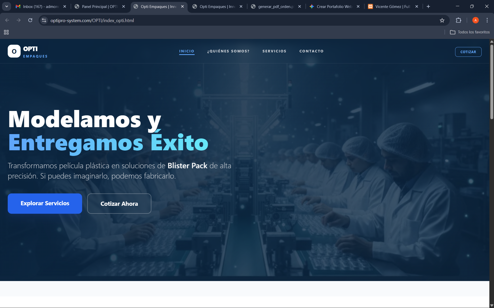
Inicio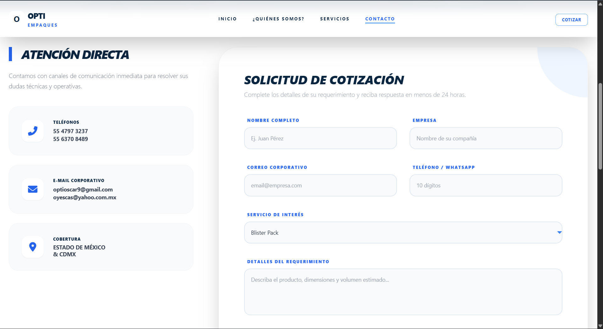
Contacto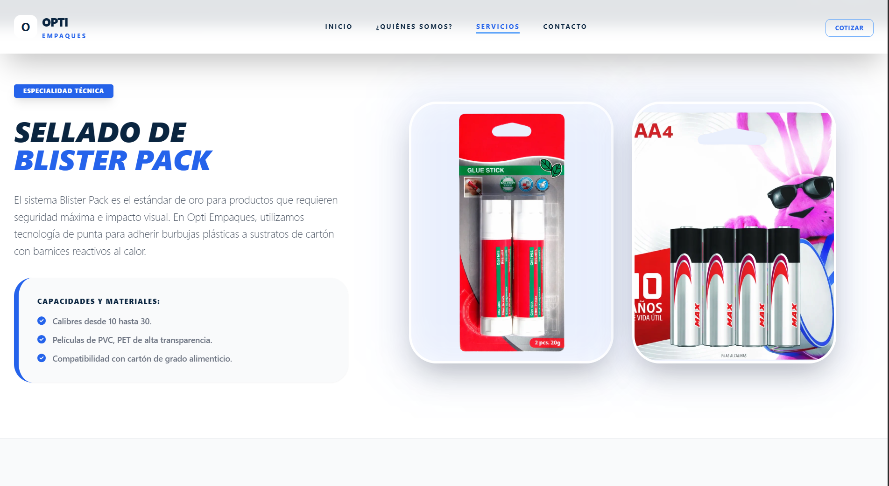
ServiciosResponsable del diseño de arquitectura, desarrollo y mantenimiento de sistemas críticos para optimización operativa.
Soporte preventivo y correctivo para asegurar la disponibilidad del 100% de los sistemas propietarios en plantas operativas.